Home / Assessment & Curriculum
Assessment & Curriculum
From 16 redesigned district interim exams to a classroom where a 0% passing rate became 59% — building rigorous, equitable mathematics systems at every level.
Redesigning District Assessments
During my time at Tulsa Honor Academy, I fastly noticed certain gaps in the standards progression and assessment plan. I sought out opportunities to plan and deliver professional development bringing together math and science teachers from across the district to think about what high school teachers need the most in earlier grade preparations, once in July 2023 and again in January 2024. Input from teachers and administrators led me to devise a plan for the Chief Executive Officer and Chief Academic Officer, who hired me to completely redesign mathematics interim exams for Grades 5-8 for the upcoming 2024-2025 school year, with four assessments for each grade and a total of 16 district assessments as well as four grade-level pacing guides with learning objectives and formative assessment recommendations.
Since Tulsa Honor Academy followed Common Core Standards for curriculum and assessment, but still needed to bridge the gap between those and the official Oklahoma State Standards, I developed a complex standard analysis between both contexts to devise a plan that pushed student proficiency with both.
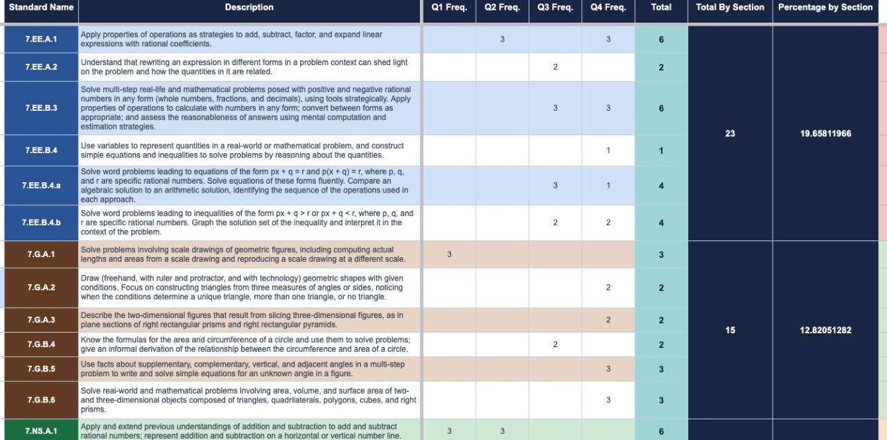
Existing interims were analyzed first, checked for standard distribution, then strategically reorganized to meet learning goals. Even when standard progression is reordered, the lesson formats and delivery are still essential in boosting student proficiency, especially with more abstract concepts that are gradually introduced in 7th Grade Math. Below, see the rationale for changing the distribution, including bridging gaps between differently categorized standards clusters.
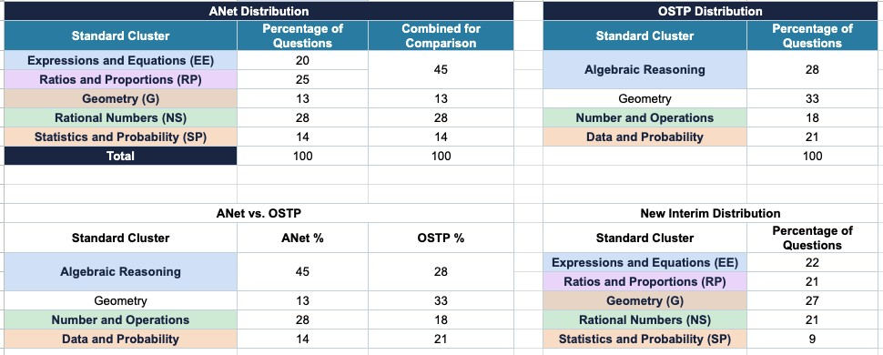
As shown to the right, sets of questions within each interim are organized by Depth of Knowledge (DOK) levels to ensure assessments are as rigorous or even more rigorous than prior interims.
See the pacing guides below to see how I organized the top-level standard progression alongside a daily calendar for teachers to follow with recommended check points for quizzes/other formative assessments.
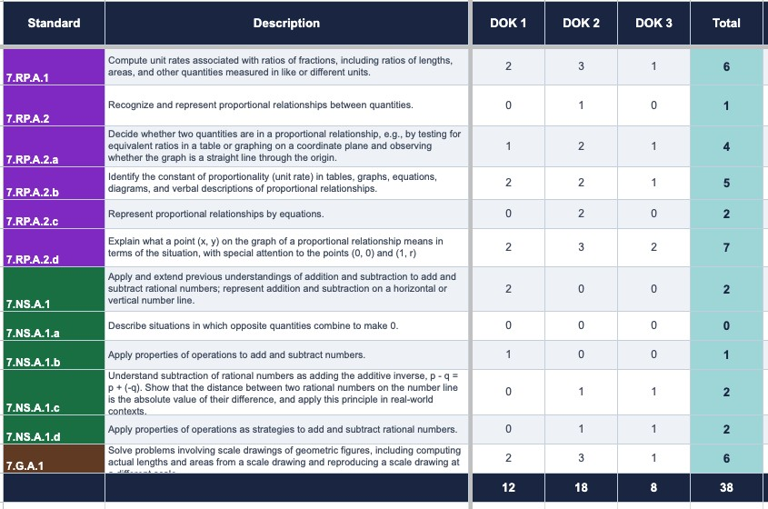
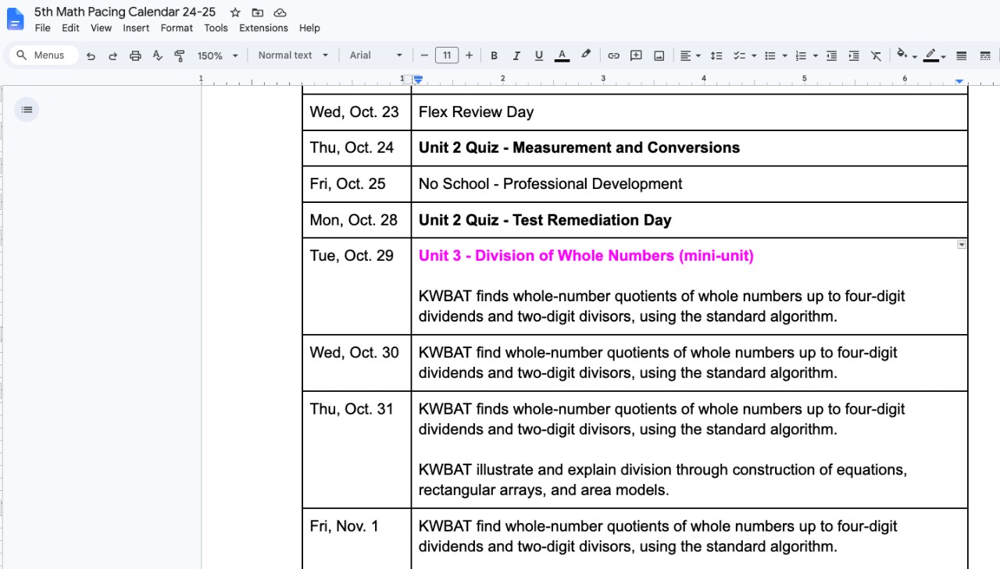
Thank you so much for the interims!!!! I'm so excited that I can set my scholars up for success. It's amazing. I'm very thankful.
Innovative Data Tracking & Leading Professional Development
During the 2024-2025 school year, I taught 9th Grade Algebra 1 at Braswell High School in Denton Independent School District, where I implemented a Building Thinking Classrooms framework inspired by the book Building Thinking Classrooms in Mathematics by Peter Liljedahl. Throughout the year, my students who entered my class with a 0% passing rate improved to a 59% rate in one year through more flexible teaching methods, including the way class was structured and allowing multiple opportunities to show mastery. While this made grading slightly more complicated, the payoff in increasing student engagement, and leadership among students initially labeled as "at risk" was worth it. See below the methods used in class, and specifically, how it impacted students' acquiring crucial knowledge and leadership skills.
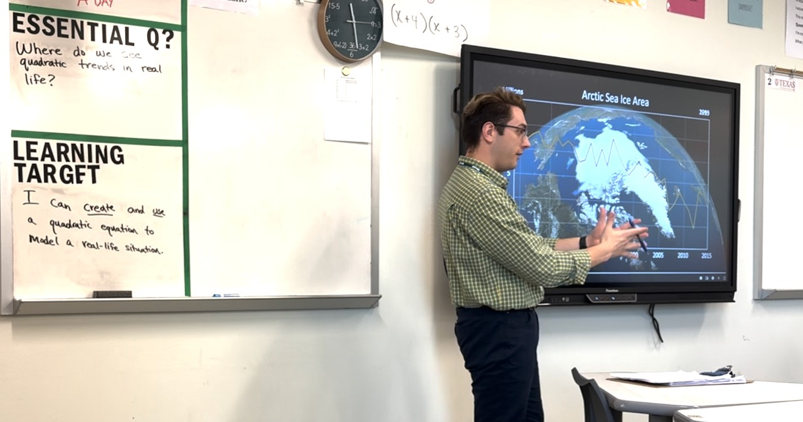
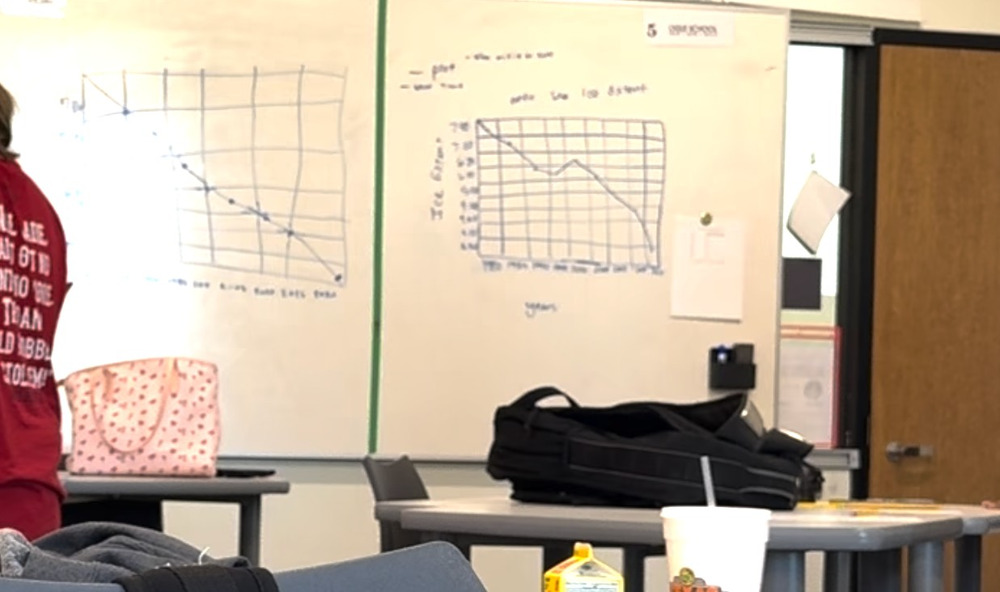
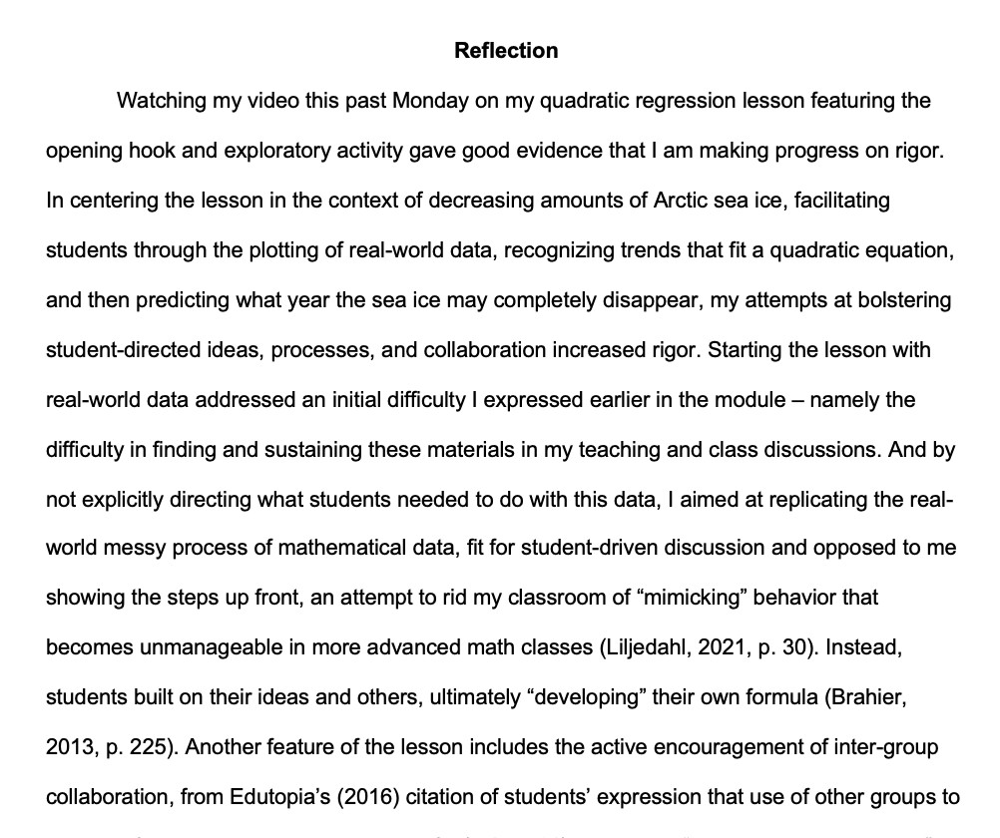
The introduction to the graduate school reflection I wrote reflecting on a key lesson on quadratic regression with climate change data highlights the key shift I made in my class this school year - disrupting the traditional mimicking and note-taking approach and instead prioritizing student thinking from the start.
To the left, student-produced graphs with the data are shown to spark discussion on specific regression types allowing comparisons between linear and quadratic representations.
Part of the reason I believe the Building Thinking Classrooms framework was so successful during the 2024-2025 school year was that the grading approach was unique and unlike what students have been used to. Waiting to enter grades after getting a full picture of students' mastery is more equitable, but it can also run into problems when districts require a certain number of grades teachers need to enter each week.
For the 2025-2026 school year, I moved to Dallas, Texas and back to 7th Grade Math at Greiner Exploratory Arts Academy. There, I devised a hybrid framework - still not counting formative assessments as grades and allowing me to see multiple data points before putting in grades. I was asked to deliver a professional development session in October 2025 on this method to explain the process.
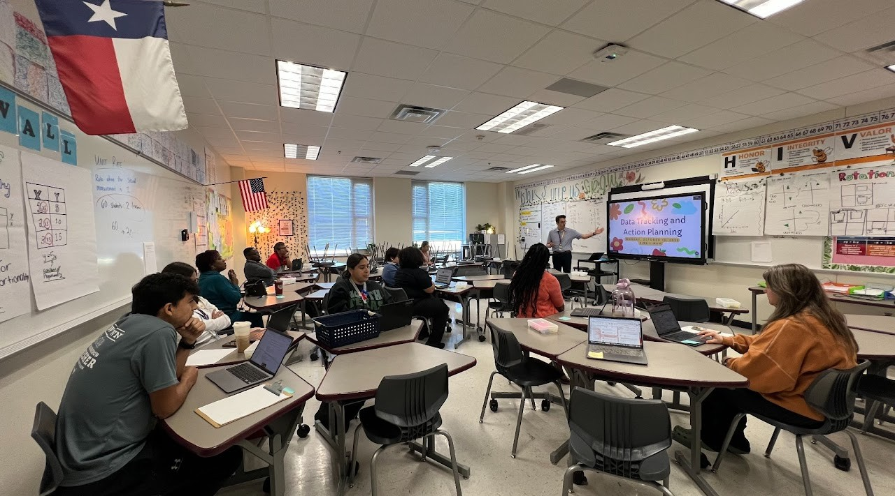
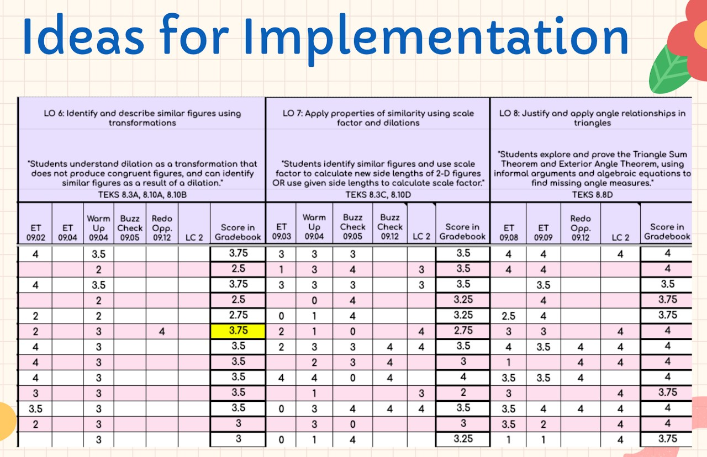
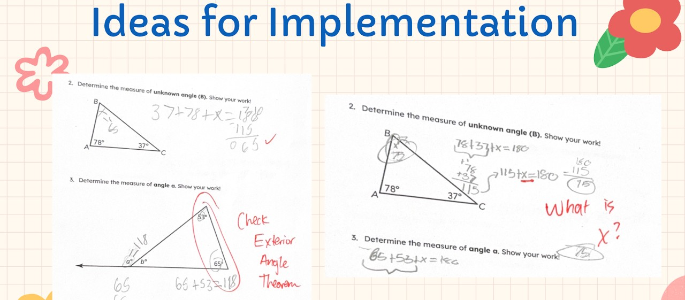
This session was a great way to share not just the grading aspect, but also how to give meaningful feedback and edit grades after students had revised work, including through giving open-ended questions and dedicated reassessment opportunities.
Inspired by recent educational literature surrounding concept maps, notably from The Cult of Pedagogy Podcast as well as Smart Teaching Stronger Learning: Practical Tips from 10 Cognitive Scientists by Pooja Agarwal, I led another professional development session in November 2025 centered on how to encourage students to make their thinking visible through different facilitation strategies.
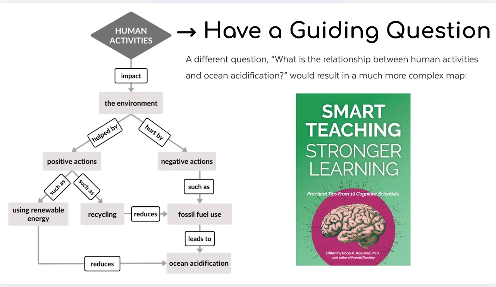
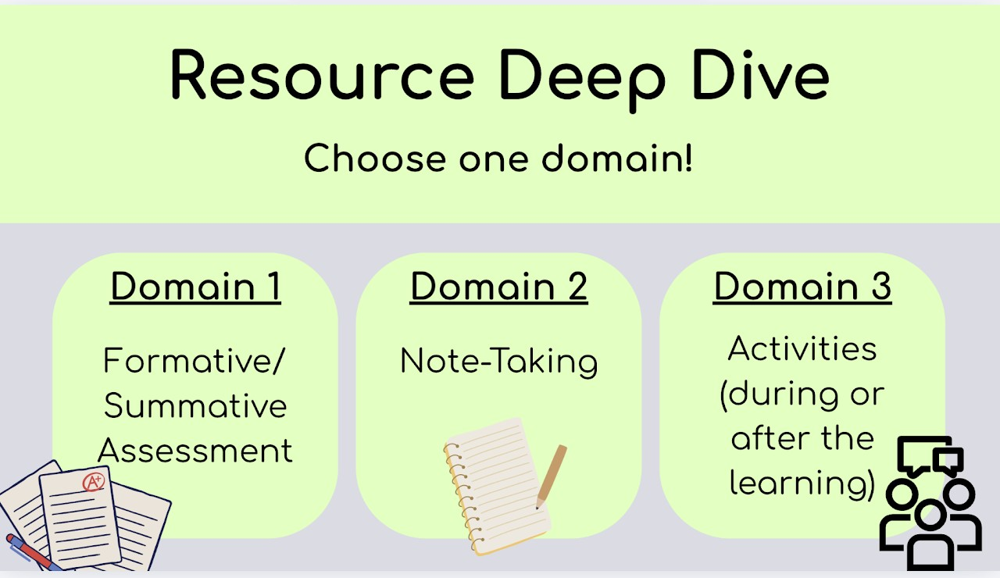
Professional Development Feedback
Anonymous responses from teachers who attended my 2025–2026 professional development sessions — 98% favorable overall.
I loved this PD — it really got my wheels turning about some changes I can make, new things I can try, and different ways to incorporate what I want to do (even if it starts as baby steps).
I appreciate the time you spent on linking so many amazing resources. Thank you for sparking ideas and reminding me about the value of providing avenues for creative thinking for students.
Mr. Linam is so amazing! Thank you a bunch for the detailed explanation and helpful resources.
Though some of the resources are being used in my class, this was a great affirmation and also new learnings. Really appreciate the insights and new ideas shared. Podcast is really helpful.
I'm interested about how to better use the notes taken by students to improve their learning. Thank you for the session.